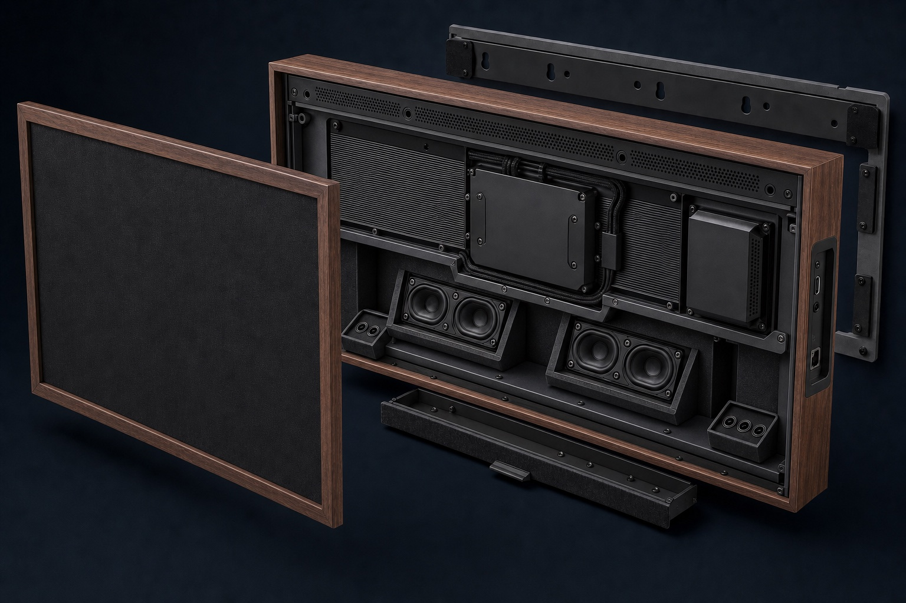
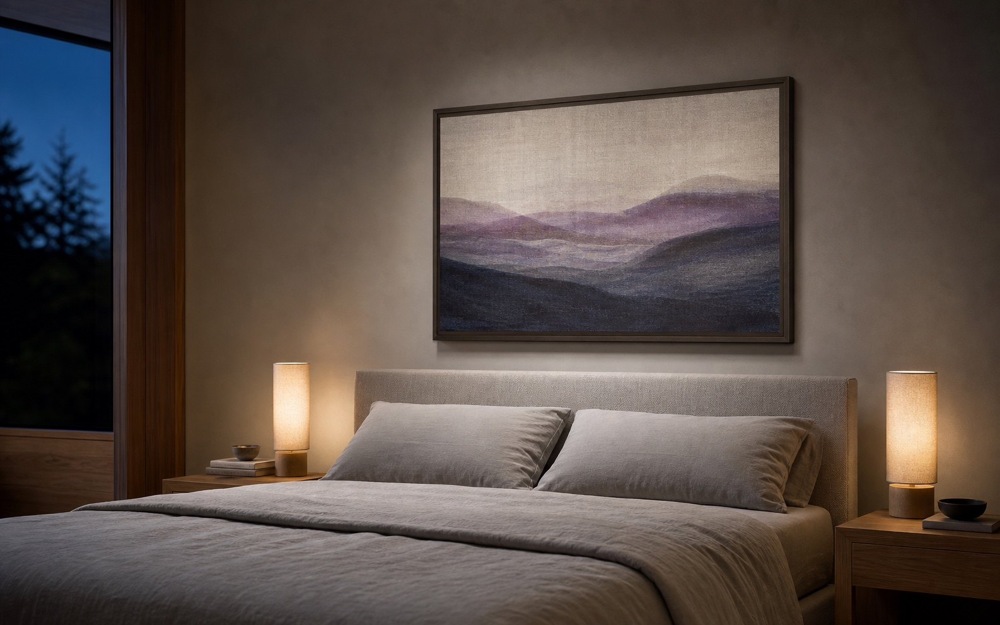
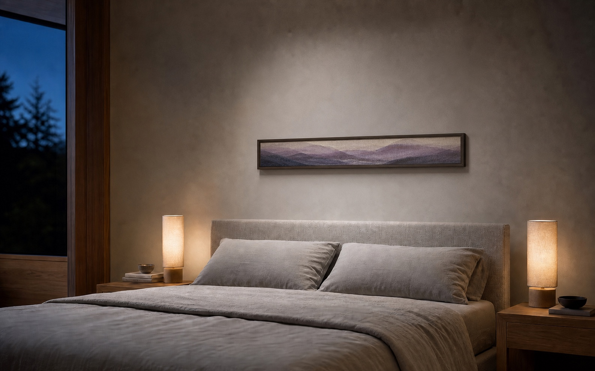

04 · AFTER-RENOVATION / WALL ART FAMILY
3 种比例 · 同一声学链路
SleeePal QuietCanvas
可换画芯家族 · 宽景、1/4 正方形与 1/2 横向长条

Physical construction · 可拆解实物构造
正面是一幅画，内部是一套可维护的双枕声学系统。
透声画芯只承担视觉与声学保护；Mic、喇叭、DSP、功放和电源都固定在独立底盘。换画不接触线缆，检修也不需要破坏画芯或墙面。
- 01
- 上缘参考 Mic先听见房间噪音，为本地计算保留提前量
- 02
- 下缘反馈 Mic左右外侧朝枕头向下，测量耳边残余噪音
- 03
- 左右喇叭腔两组独立密闭腔向下倾斜，对应左右枕位
- 04
- 中央电子舱DSP、功放和电源分区屏蔽并连接背部散热脊
- 05
- 侧入接口电源、USB‑C 线控和数据从短边插入，不占背部进深
- 06
- 抽拉检修盒易损件从下缘取出，背部挂轨保持在墙面
01 · Reference上缘参考 Mic
提前采集房间噪音
02 · Compute本地 DSP
计算受限的反向声波
03 · Output左右定向喇叭
向对应枕位输出
04 · Verify下缘反馈 Mic
测量残余并持续修正
依次查看：环境声采集 → 反向声波输出 → 枕边静谧空间


三种比例共用“上缘参考采集、下缘枕位反馈、左右喇叭输出、背部隔振服务腔”的架构。Wide 适合完整艺术表达；Mini 把存在感压到最低；Bar 以更长的左右基线换取更薄的视觉高度。
小尺寸不等于自动拥有同等效果。Mini 应优先验证单枕或短距离场景，双枕位可评估左右各一只；所有尺寸都必须在真实床位重新校准，不能直接套用 Wide 的参数。
01可换画芯
三种标准比例都使用通过透声、阻燃和耐久验证的织物画芯。
02双 Mic 采集上缘参考 Mic 提前听见噪音，下缘反馈 Mic 朝枕位测量残余。
03喇叭定向输出下沿按尺寸布置单枕或双枕喇叭腔，指向必须以床位实测确认。
04独立服务盒画芯与电子模组分离，换画不接触 DSP、功放、电源或线缆。
Mini 建议约 420–520 mm 正方形 · 先做单枕验证
Bar 建议约 900–1100 × 180–260 mm · 横向挂装
三种尺寸安装后都必须校准延迟、相位与输出上限